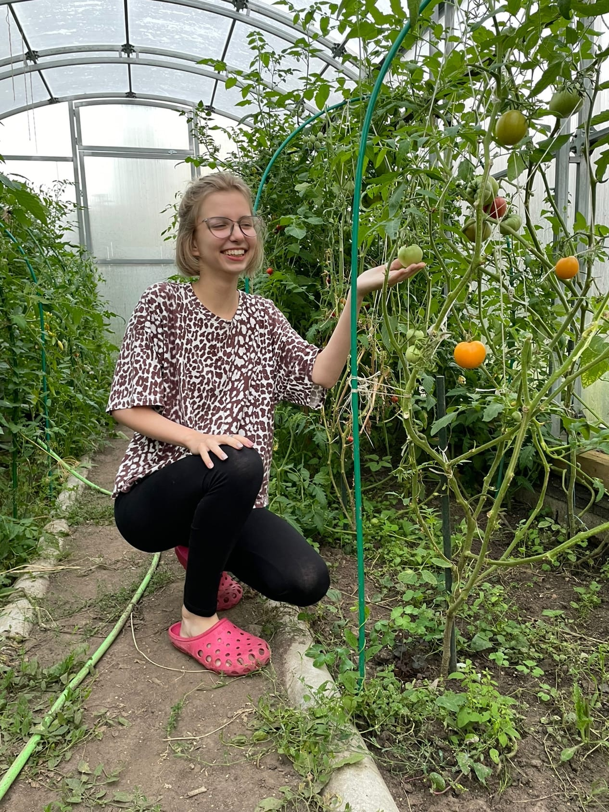
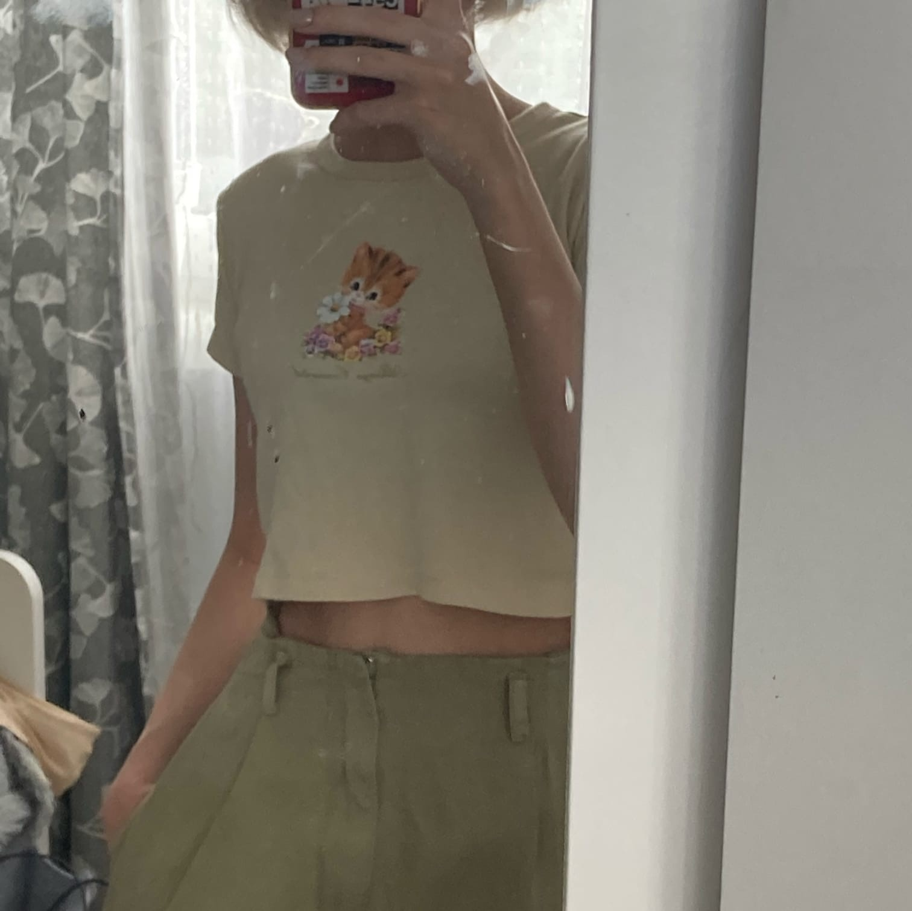
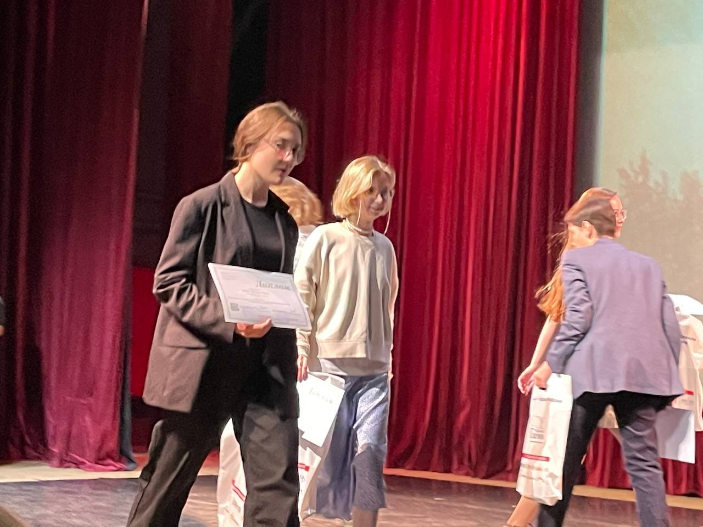
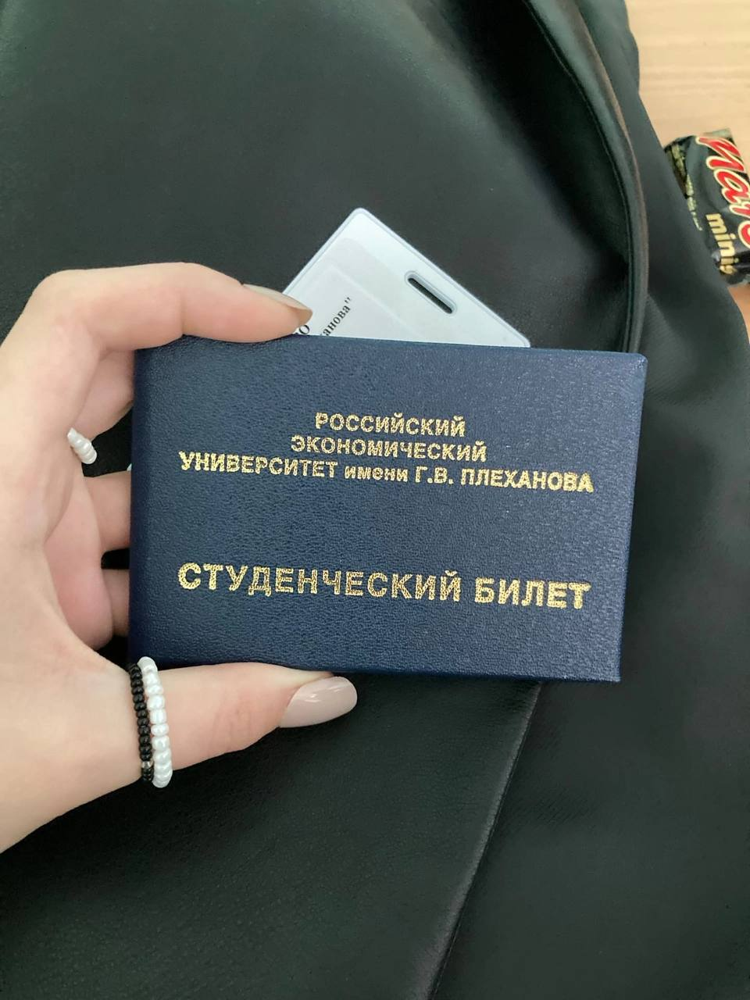

Моя прекрасная Наталия Александровна
Варламова Наталия Александровная
Родилась 9 июля в 2004 году
Невероятной красоты девушка, с очень тонким чувством юмора,с прекрасными чертами души.
Дальше мы подробней попробуем разобраться в этой идеальной девушке, но слов не хватит, чтобы ее описать!
В первую очередь при знакомстве с Наталией Вы обратите внимания на ее очеровательные зеленые глаза, которые своей глубиной сразу заставляют ей восхищаться.
Недаром говорят, что самый красивый изгиб женщины - это ее улыбка, и в нашем случае это правда. Когда Наташенька улыбается на душе становиться тепло и спокойно.
Невозможно промолчать, что Наталия имеет отменное чувство стиля и сногшибательные параметры ее тела, которые заставляют других женщин ей завидовать.
Наталия очень хороший человек из-за многих причин, но можно выделить, что она поддержит тебя в любой ситуации,выслушает,может поплакать вместе с тобой и придумает пути решения. Наша особа не только прекрасная девушка, но и великолепный друг.
Наташа настолько прекрасна, что в ее лексиконе никогда не услышишь нецензурную брань. Она имеет способность налету изучить любой материал, чтобы тебе помочь. Таких девушек невозможно забыть, потому что ее граммотная речь заставит тебя к ней прислушаться.
Многие говорят, что девушек с чувством юмора не существует, но Наталия опровергает этот тезис. Она уникальный человек, потому что она может очень остро и тонко шутить на любую тему, но в тоже время с ней всегда будет спокойно. Это именно та женщина которую ищут всю жизнь!
Наталия Александровна обладает талантом художественного рисунка. Я лично присутствовал на вручении ей диплома о том, что она выиграла одну из самых сложных олимпиад в Москве, которую пыталась выиграть несколько лет.
При помощи этой олимпиады она смогла поступить, в условиях очень сильной конкуренции, в один из ведущих ВУЗов России, РЭУ им. В. Г. Плеханова на направление дизайна. Понятное дело,что это далеко не все ее достядения!!!
